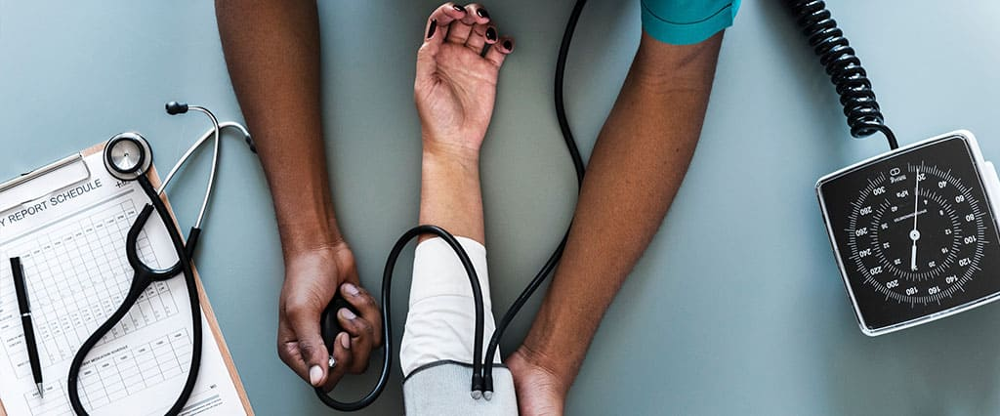

Medicina în Europa, în special în România, este inutilă, atunci când aveți artroză. Vorbesc despre spitalele de stat. Desigur, atunci când aveți bani, nu este absolut necesar să tolerați neplăcerile. Dar când nu sunt, devii ostatic al sistemului.
Până la 56 de ani, am condus o viață activă. Am mers cu bicicleta cu nepoții, am călătorit, am făcut yoga. Rareori, când nu aveam planuri în sfârşitul săptămânii. Dar, la un moment, mi-am dat seama că durerile periodice în genunchi au devenit mai degrabă permanente, așa că am decis să merg la medic.

În spital
M-am înscris la un terapeut. La o întâlnire cu el am aşteptat doar o săptămână și apoi nu fără aventură. Am venit la ora stabilită, iar acolo în linie erau deja aproximativ 7 persoane. Și nimănui nu-i pasă de ceea că sunt scrisă la o vreme. Primirea trebuia să se înceapă mai devreme. Deci, toată lumea stă în ordinea unei cozi vii.
În aceeași zi, din fericire, am ajuns la terapeut (deși nu toată lumea era atât de norocoasă din rândul nostru). Dar a fost doar începutul. Terapeutul m-a trimis la ecografie și la reumatolog. Să ajungi la reumatolog este chiar mai dificil decât la terapeut. De data aceasta am fost înscrisă peste două săptămâni.
În tot acest timp, am continuat să sufăr de articulațiile care se răsuceau și dureau, și nici măcar nu știam cum să scap de această durere. De asemenea, genunchii au început să se umfle. Cel mai trist lucru este că nu am avut altă cale, pentru că ambulanța, pentru astfel de cazuri nici nu reacționează!
Numai reumatologul a diagnosticat (artroza de gradul 2), a prescris tablete și injecții hormonale. Cu pastile nu au fost probleme, dar injecțiile, a trebuit să vin în fiecare zi la clinică. Injecţiile mi le făcea asistenta medicală. Am ajuns la ea fără probleme, dar pentru drum cheltuiam aproximativ 2 ore. Ei bine, știi cum se întâmplă atunci, când pentru sănătate mergi la multe lucruri.
Două luni mai târziu, am început să cred că toate eforturile nu sunt în zadar. Viața mea a început să se întoarcă încet în vechiul mod: în genunchii se simțea durere doar periodic, tumoarea a scăzut. M-am întors la yoga și am început să merg cu bicicleta.
Totul de la zero
Dar nu a fost totul chiar aşa! Durerile în genunchi s-au întors literalmente peste o săptămână, după ce am încetat să mai iau pastile (injecțiile am încetat să mai fac cu mult înainte).
Am fost mai mult decât disperată! Lacrimile mi-au venit în ochii mei, la simplul gând că ar trebui să trec prin toate cercurile iadului - să merg la doctori. Șeful meu nu va înțelege tratamentul repetat, va fi mai ușor să angajeze o tânără angajată, decât să se adapteze în mod constant la programul meu. Și chiar înainte de pensie, nu vreau să-mi schimb locul de muncă.
Atunci m-am gândit că e gata. Da, da, sunt împotriva sine-tratamentului. Dar vedeţi singuri, că sistemul medical nu este gata să lucreze cu cei cu boli cronice.
Există o cale de ieșire?
Oricum, am început să caut o alternativă. Am citit o grămadă de informații și mi-am dat seama că majoritatea medicamentelor prezentate pe piață sunt periculoase pentru sănătate. Se pare că, în afară de articulațiile bolnave, există o mulțime de probleme. Mi s-au deschis ochii la multe întrebări.
Știind că sunt împotriva chimiei, prietena mi-a sfătuit monodozele . Am început să citesc despre acest instrument și mi-am dat seama, că era exact ceea de ce aveam nevoie: elimină durerea, inflamația și voi putea să mă mișc fără restricții. Dar m-a mituit compoziția - sulfat de glucozamina, condroitină sulfat, metilsulfonilmetan, mangan, extrat de filipendulă ulmaria, acidul hialuronic, fără de care este imposibil să se restabilească articulațiile. Plus vitamina C, fără de care sinteza colagenului este imposibilă.
Și cel mai important — monodozele m-au ajutat! Le-am băut o dată pe zi timp de o lună (foarte convenabil, apropo, că totul este separat preambalat). Durerea a început să dispară în prima săptămână, iar la sfârșitul cursului m-am simțit cu 20 de ani mai tânără. Formula smart funcționează și sunt foarte bucuroasă că am început să iau acest produs.
Sper că cuiva i-a veni la îndemână recomandarea mea despre monodoza . Sau poate guvernul va citi articolul meu și va reforma medicina! Ei bine, acesta este mai probabil ceva fantastic.
Comentarii:
Inna
Și mama mea avea artroză. Suferă săraca, iar proteza a refuzat categoric. A luat cursul și a lepădat mersul cu bastonul!
Veronica
Bravo ție! Evident, mulți oameni cred în acest lucru despre medicină
Ioana
De asemenea, am încercat mai întâi să mă adresez medicilor și apoi mi-am dat seama că va trebui să locuiesc în spital sau să găsesc o alternativă. Monodozele sunt o soluție excelentă, care poate fi comandată pur și simplu online. Și nici nu aveți nevoie de rețetă.
Stefan
Adriana, ești pozitivă. Vă doresc o viață lungă şi activă!
Angela67
Monodozele au venit la timp, timp de 3 zile. Totul a venit sigur și întreg, am plătit după primire. Abia am început să iau, deci nu pot spune nimic concret încă.
Sandra
Trauma cotului meu sa transformat în artrită, nici măcar nu am putut mânca. ma adus înapoi la normal
Irăna
În general, nu toate spitalele sunt aglomerate, dar în orașele mari da - aceasta este o problemă reală.
Catarina
Compoziția este foarte deosebită -eficientă și nu aduce la dependenţă
Zina
Nu întârziați cu tratamentul, cu cât începeți mai devreme, cu atât sunt mai multe șanse de a evita invaliditatea. Am avut răbdare, iar acum pot să mă mișc doar pe scaun cu roţi...
Adelina
De multe mijloace, m-am săturat, dar stomacul meu îl primeşte bine.
Frăsinica
Vă mulțumim pentru recomandarea preparatului! Am comandat deja, aștept.
Arina
da, medicina în Europa nu este lipsită de dezavantaje...
Luminiţa
De asemenea, m-am obişnuit să cumpăr medicamente pe bază de prescripție medicală, dar cu articulațiile nu este cazul cela. E atât de dureros, încât vreau să mă urc pe perete. Așteptarea medicului nu este deloc o opțiune. Datorită monodozelor , am început recuperarea mult mai devreme, decât am fost prescris la un terapeut, iar când am ajuns la reumatolog, aproape nimic nu era bolnav.